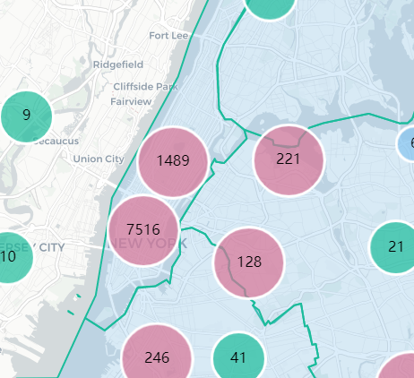
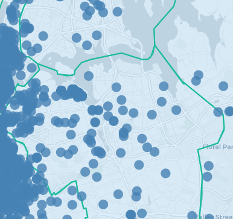
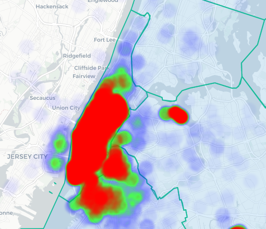
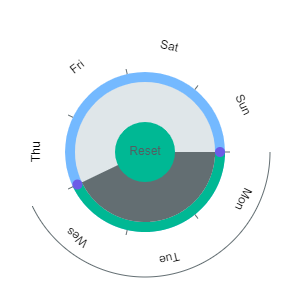
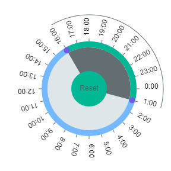
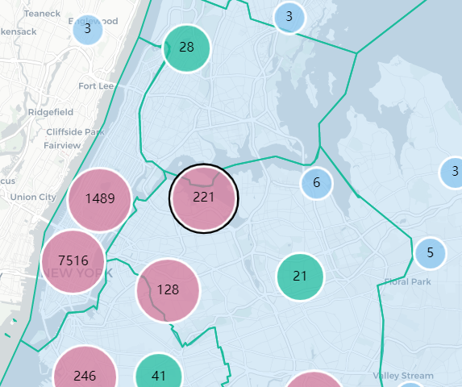
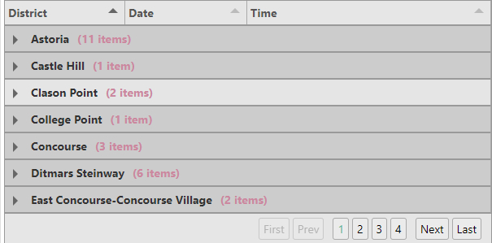

Uber Moves
a visual exploration for Uber pickups
Interactive DemoVideo
Summary
Process Book
Dataset
a visual exploration for Uber pickups
Interactive DemoThe goal is to visually and meaningfully show the 10,000 pickups in Newyork city in April of 2014. These 10,000 pickups are randomly sampled from the original 600,000 pickups.
The pickup points are shown as three different maps containing Cluster, Circles and Heatmap.
  The pickup points can be selected either by days-of-the-week (eg:Mon-Wed) and hours-of-the-day (9am-14pm) by circular brush selection.
 There are three charts that help understanding the pickup pattern.
The first chart helps with understanding number of pickups per each day of the week.
The second chart helps with understanding number of pickups per each hour of the day.
The third chart shows a graph of lines, one line per day of the week, summarized. This shows the pattern of how the uber hourly pickups are each day of the week.
The cluster map provides several clusters which a groups of pickup points. Selecting a particular cluster provides the details of that cluster in a tabular format, organized/sorted by district, date and time.
 There are three preset buttons, showing three different interesting story points.